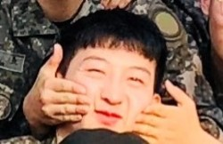

자기소개
저는 동의과학대학교 컴퓨터 정보과에 재학 중인 16학번 1997년생 김병철입니다. 저는 동의과학대학교 컴퓨터정보과에 들어오기 전에는 컴퓨터란 게임과 검색이 전부라고 생각했고 게임만 했었는데 컴퓨터정보과로 진학하고 나서부터는 프로그래밍에 재미를 들이면서 관심을 가지고 저에게 맞는 분야는 어디인지 찾으면서 열심히 공부하는 중입니다. 아직 맞는 분야를 확실하게 정하지는 못 했지만 게임 개발 쪽으로 가보고 싶습니다. 실력이 부족하지만 아직 꽃다운 20대이기 때문에 열심히 할 것이며, 제가 가고 싶은 회사에 맞는 인재가 되도록 노력하겠습니다.